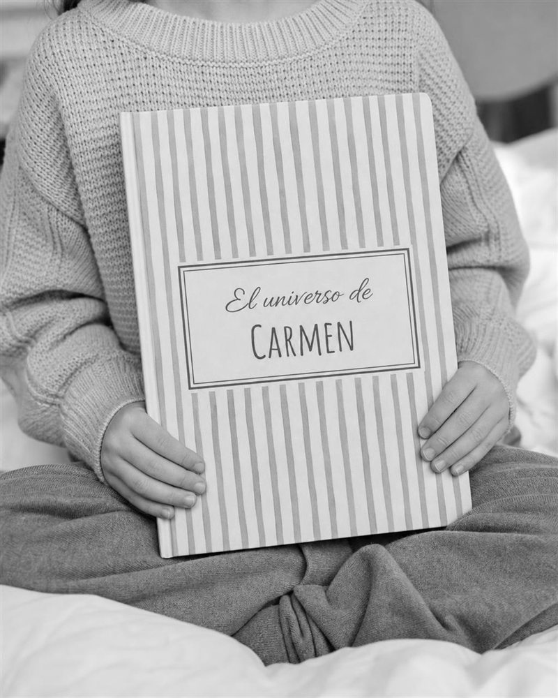

60, 70, 80 o 90 años dan para muchas historias. Convertimos la suya en un cuento personalizado ilustrado en acuarela, para que toda la familia la lea el día de la fiesta y los más pequeños descubran quién era antes de soplar tantas velas.
Crear su libro →
Detrás de cada cumpleaños redondo hay una vida llena de anécdotas que los nietos ni se imaginan. Gira las tarjetas:
Justo cuando empiezan a ser abuelos. El libro les presenta a sus nietos tal como eran de jóvenes.
Ocho décadas dan para un libro precioso: el pueblo, los bailes, la familia que formaron.
Un homenaje en vida, para que los bisnietos conozcan su historia contada con cariño.
Cada uno aporta un recuerdo, y el libro lo junta todo.
Hijos, nietos, hermanos y amigos. El precio se reparte entre todos y el regalo es de todos.
El libro tarda entre 2 y 3 semanas desde que nos contáis la historia. Pídelo con al menos 2 semanas de margen antes de la fiesta.
Sí, y queda precioso. Cada persona puede aportar sus recuerdos y anécdotas, y el libro lo junta todo en una sola historia.
Es uno de los mejores momentos: leer unas páginas en voz alta después de soplar las velas. Prepara los pañuelos.
Claro. Lo podéis preparar sin que se entere y darle el libro el mismo día de su cumpleaños.